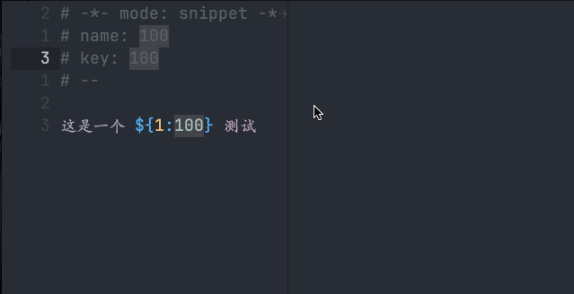

自定义 Snippets
文章目录
前言
上一篇文章讲了如何如何在 Emacs 中使用 Snippet 来快速编写代码，提高效率。
虽然很多插件已经为我们准备好了现成的模板，但有时我们需要一些个性化的代码片段。
今天，我们就一起来学习如何在Emacs中创建自己的Snippets吧！
自定义 Snippet
要开始创建自己的代码片段，只需在Emacs中按下 M-x 然后输入 yas-new-snippet，或者直接使用快捷键 C-c C-n。
这将打开一个新的编辑窗口，并且自动进入 snippet-mode 。里面预设了一些基本信息，看起来像这样：
|
|
-
name 是
Snippet的名称 -
key 当你需要调用这个片段时，只需要输入这里的关键词，再按 Tab 键就能触发代码的自动填充。
#--后面的内容就是展开后的内容
编写完成后使用 C-c C-c 来保存。
模板语法
在 Snippet 中可以插入任意的文本，不过 $ 、 ` 是特殊的，需要使用 \ 转义。
$ 在 Snippet 中表示这个地方的内容需要手动输入，帮我占着这个位置，也就是占位符，可以通过 TAB 在占位符之间切换。
$ 通常跟随一个数字，表示第几个位置，例如 $1 表示第一个位置，展开后光标默认就在这个地方，以此类推。
占位符还可以有默认值，它需要跟者一对 {} ，然后用 : 分割位置和默认值。也可以不用数字直接写默认值 ${var} 。
例如: 这是一个 ${1:100} 测试 展开后光标会停在 100 的左边，然后一旦你输入内容后，100 就会被替换，用 TAB 就会跳到下一个 100 就会保留。

$0 表示所有占位符都确认后光标所停在的位置。
比如在 for 循环，我们希望最后光标在循环体里，这时候 $0 就非常有用。
下面是 python 中 for in 的 snippet ，当输完后就会进入到循环体里，这样方便编写逻辑。
|
|
执行 Emacs Lisp 代码
Emacs Lisp 代码使用 ` 包裹，将会在扩展的时候执行这个代码，从而可以动态的生成一些片段
比如想要插入当前时间可以这么写
|
|
总结
- 使用
yas-new-snippet创建新的Snippet $表示占位符，后面的数字表示光标移动的顺序，可以使用${number:default value}添加默认值- 使用
`编写的代码会在展开的时候执行